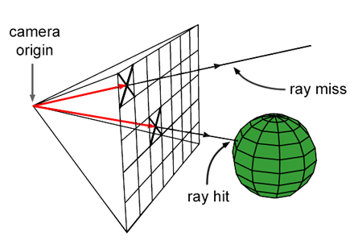
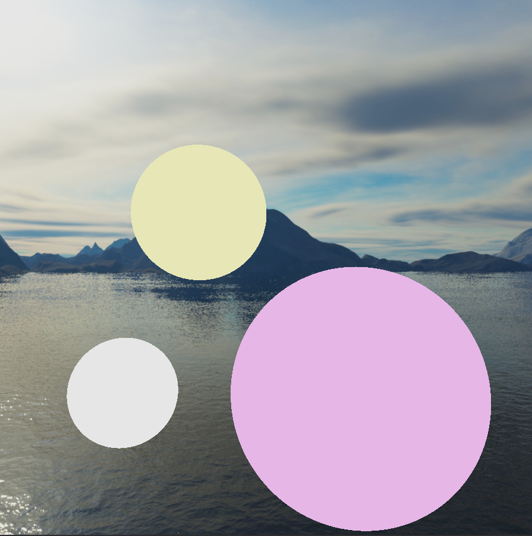
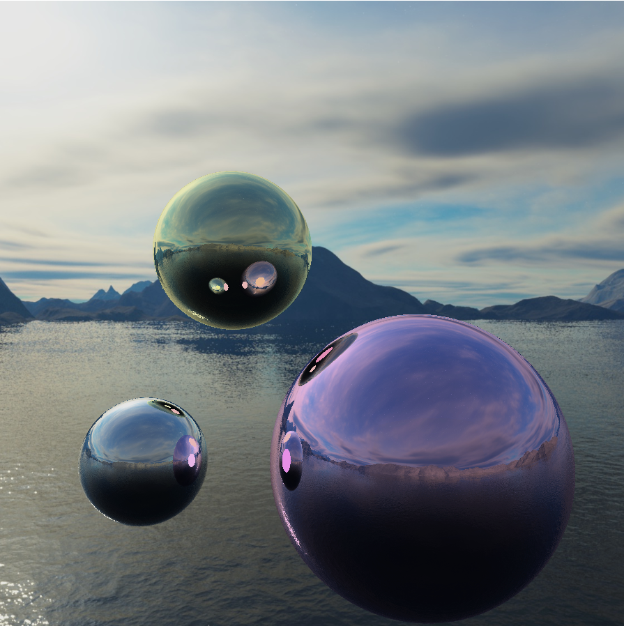
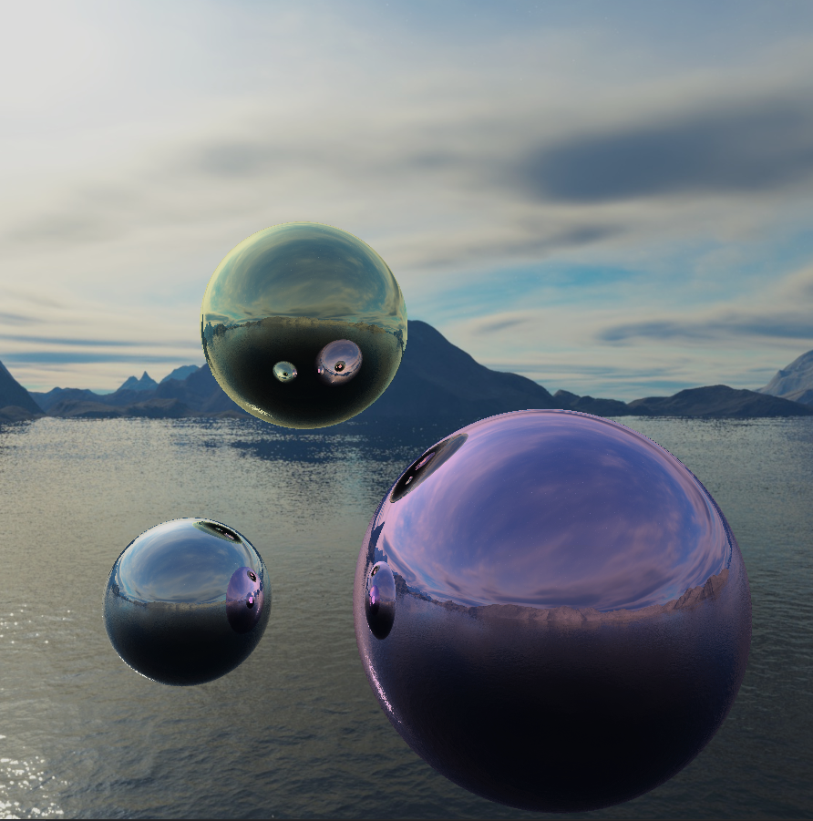
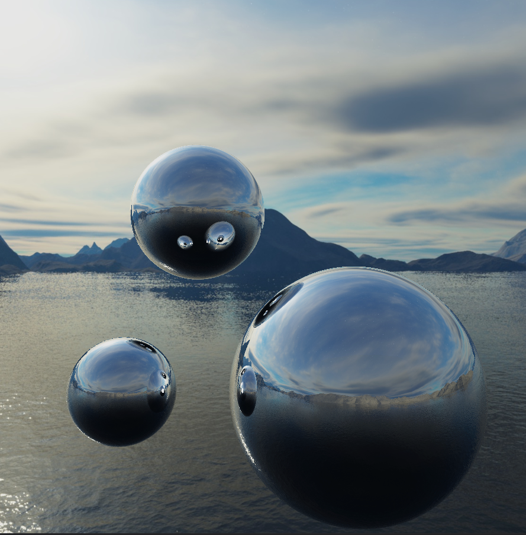
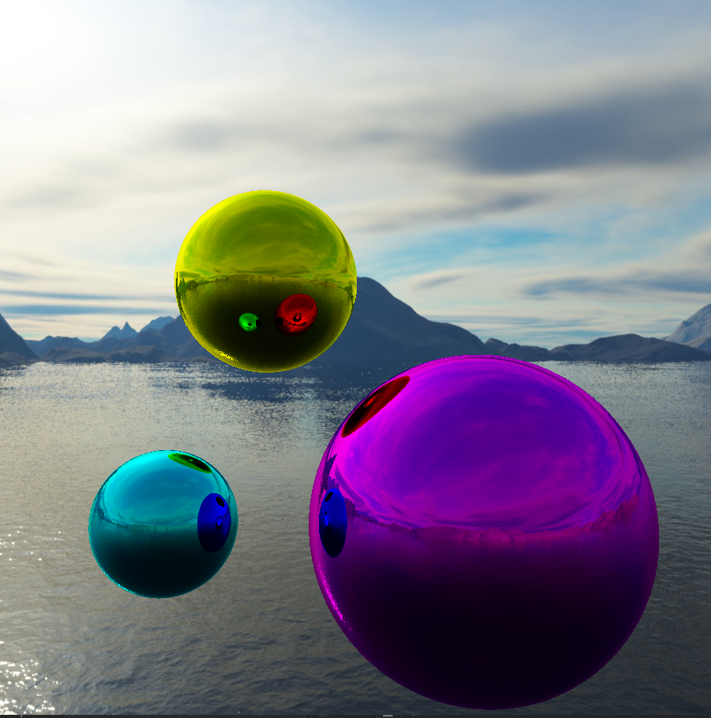

Initial Construction
We can start from the basics. Raytracing, in short, is the method of casting rays at each individual pixel on a 'screen' in front of a scene of objects in the hopes of it hitting an object. If it does, it retrieves
the 'data' of the point of the object it hit and using that prints out a specific color on the screen. This is done for every single pixel present on screen.
The result is therefore extremely accurate but incredibly time-wasting.
 Now this process becomes extremely intensive very quickly and will take too long per frame to render, so a way out of this predicament is to split the work into multiple threads. A compute shader can accomplish This
but dividing up and workspace into multiple work groups based on your graphics card and work on each one in seperate threads. This speeds up the process exponentially and eases up the work done by the CPU in calculations.
A compute shader is fairly simple to set up, and for the purposes of OpenGL, we make a quad texture that covers the entire window onto which a texture is rendered and the compute shader draws pixels onto the texture
mentioned.
Now this process becomes extremely intensive very quickly and will take too long per frame to render, so a way out of this predicament is to split the work into multiple threads. A compute shader can accomplish This
but dividing up and workspace into multiple work groups based on your graphics card and work on each one in seperate threads. This speeds up the process exponentially and eases up the work done by the CPU in calculations.
A compute shader is fairly simple to set up, and for the purposes of OpenGL, we make a quad texture that covers the entire window onto which a texture is rendered and the compute shader draws pixels onto the texture
mentioned.
Now this looks pretty ugly without a background, so we added a skybox. It is a bounding box around a scene that appears to the viewer as the sky and background. Essentially, it is an arbitrarily large cube containing a warped texture or image to simulate atmosphere. We found this one off the internet:
This image was generated only by reflecting each camera ray once and finding the object at that location.
That's why you see the spheres inside the reflections in solid color. Increase that limit, and you can see reflections inside reflections, and so on:

This is a simple enough strategy to start off with. The complexity comes in the data required for the color of each pixel. The first issue is to detect whether a ray is actually hitting an object. This problem is solved
using standard matrix geometrical calculations based on the normal of a triangle, which most objects are made out of. Of course, customized algorithms for different types of solids can be made similarly.
Diagrammatic representation of raytracing
Drawing a basic sphere with only hit detection; Background for display purposes
Now this looks pretty ugly without a background, so we added a skybox. It is a bounding box around a scene that appears to the viewer as the sky and background. Essentially, it is an arbitrarily large cube containing a warped texture or image to simulate atmosphere. We found this one off the internet:

Another task we can undertake in light bouncing. We can set up 'mirror' objects that almost purely reflect light and iteratively create origin and destination rays from one surface to another to mimic reflection. The pixel color intensity is continuously
modified by each bounce by a certain value until a 'bounce limit' is reached. We can reach some impressive results with this alone. You can now see behind the camera as well.
We gave the spheres a slight tint:
Skybox
Reflection limit = 1

Reflection limit = 2

Reflection limit = 3

Purely reflective spheres with limit = 5

Strongly tinted spheres with limit = 5